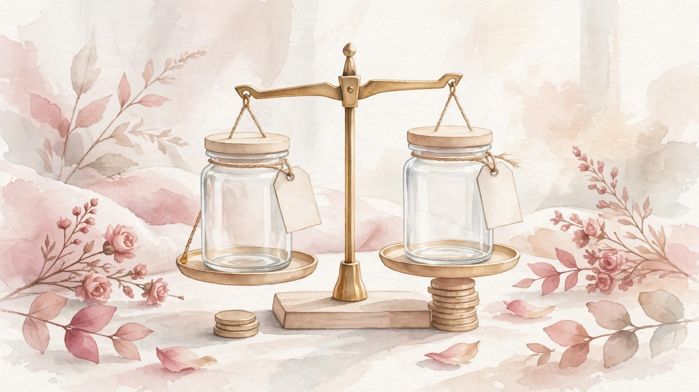

トップ ＞ インナーケア・サプリ ＞ 定期購入の価格表示の読み方（初回と2回目以降）
定期購入の価格表示の読み方（初回と2回目以降）

サプリメントの販売ページでは、「初回◯◯円」「◯%オフ」といった価格表示が大きく書かれていることがよくあります。この記事では、定期購入の価格表示の読み方を、計算の仕方とあわせて整理します。特定の販売店の話ではなく、表示の一般的な読み方です。
初回価格は「1回目だけ」の価格
初回価格は、その名のとおり最初の1回だけに適用される価格です。2回目以降は通常価格（定期価格）に戻るのが一般的です。表示を読むときは、「初回いくらか」だけでなく、「2回目からはいくらか」を必ずセットで確認します。この2回目以降の価格こそ、続けた場合に毎回支払う金額です。
また、「◯%オフ」という表示は、何と比べた割引なのか（通常価格と比べて、など）も確認ポイントです。割引率の大きさより、実際に支払う金額で比べる方が、判断を誤りにくくなります。
合計は、自分で計算してみる
受け取り回数の条件がある定期購入では、条件回数分の合計を計算してみることをおすすめします。初回価格＋（2回目以降の価格×残りの回数）＋送料、という形です。電卓で一度計算するだけで、買い物の見通しは大きく変わります。
あわせて、1日あたりの金額に直してみるのもひとつの方法です。1袋（1か月分）の価格を30で割ると、1日分の目安が出ます。毎日の習慣として続けられる金額かどうか、自分の生活費の感覚と照らし合わせやすくなります。
送料と支払い方法も、価格の一部
本体価格のほかに、送料が別途かかる場合と、含まれている場合があります。支払い方法によって手数料がかかる場合もあります。最終的に支払う総額は、本体＋送料＋手数料です。申し込みの最終確認画面で、総額が表示されることが多いので、確定前に必ず目を通してください。
条件の読み方の全体像は、別記事「定期購入の条件の読み方」でも整理しています。価格と条件は、セットで読むのが定期購入の基本です。
もうひとつ、見落としやすいのが「ポイント還元」や「クーポン」の扱いです。還元分を差し引いた実質価格のように見える表示もありますが、実際に支払う金額はあくまで表示価格です。比べるときは、ポイントの分を割り引かず、支払う総額同士で比べるのが確実です。また、まとめ買いの割引と定期購入の割引が併用できるかどうかも、販売店ごとに扱いが異なります。条件の細部は、申し込み画面の最終確認で必ず目を通してください。
計算の手間を減らすために、私は「総額÷日数」の数字だけをメモする習慣にしています。1日あたりの金額が分かれば、他の買い物との比較も簡単になります。
セラフィナ「割引の数字より、合計でいくら払うか。そこを計算すると、表示が読みやすくなるね」

セラフィナ｜美容の道具箱の案内役
「量と表示が分かれば、美容は失敗しない。」——セラフィナと白猫のモコが、買う前のチェックポイントを案内します。綺麗になりたい気持ちに正直に、でも表示は冷静に読むのが、このサイトの約束です。